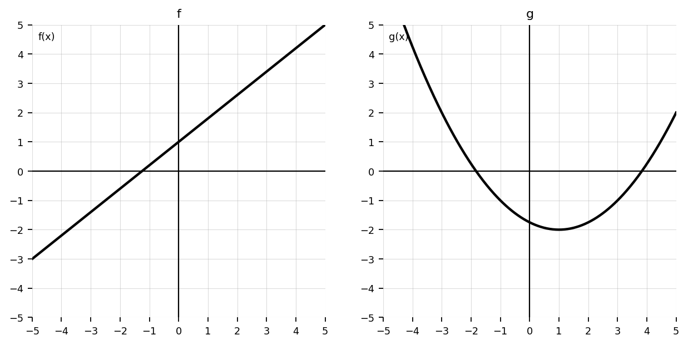
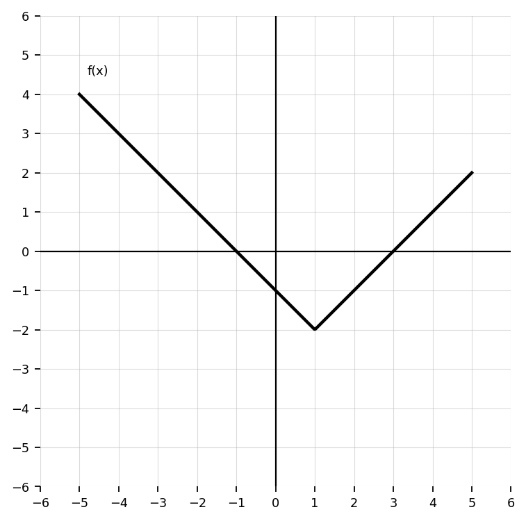
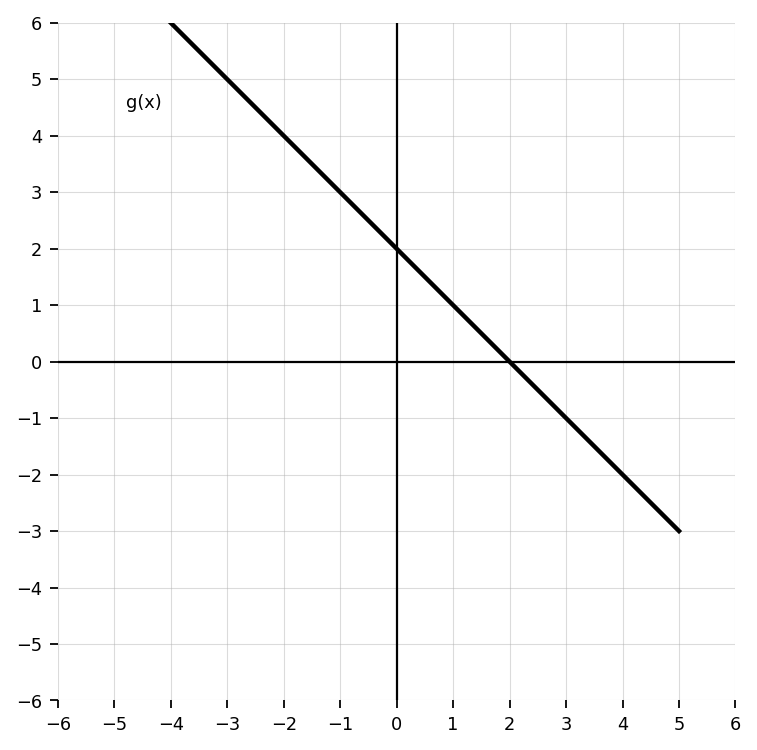
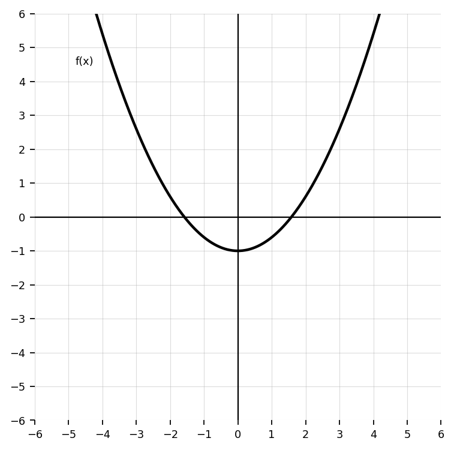

Unit 2 Section 2.3: Function Composition
Section 2.3 Teacher Question Bank
Let \(f(x)=2x+3\) and \(g(x)=x^2-1\). Evaluate:
- \(f(g(2))\)
- \(g(f(2))\)
- Are the answers the same?
Let \(f(x)=x+5\) and \(g(x)=3x\). Find:
- \((f\circ g)(x)\)
- \((g\circ f)(x)\)
Let \(f(x)=x^2\) and \(g(x)=x-4\). Evaluate:
- \(f(g(3))\)
- \(g(f(3))\)
Use the table.
| \(x\) | \(-2\) | \(-1\) | \(0\) | \(1\) | \(2\) |
|---|---|---|---|---|---|
| \(f(x)\) | \(1\) | \(3\) | \(2\) | \(-1\) | \(0\) |
| \(g(x)\) | \(2\) | \(0\) | \(-1\) | \(3\) | \(1\) |
- \(f(g(0))\)
- \(g(f(2))\)
- \(f(f(1))\)
Fill in the blanks.
- \((f\circ g)(x)=\) ____________________
- \(f(g(x))\) means first use ____________________, then use ____________________.
- \(g(f(x))\) means first use ____________________, then use ____________________.
Let \(f(x)=4x-1\). Evaluate:
- \(f(3)\)
- \(f(f(3))\)
- \(f(f(x))\)
Let \(f(x)=\sqrt{x}\) and \(g(x)=x+9\). Evaluate:
- \(f(g(7))\)
- \(g(f(16))\)
Decide whether each expression represents function composition or function arithmetic.
- \(f(g(x))\)
- \(f(x)+g(x)\)
- \((f\circ g)(x)\)
- \(f(x)g(x)\)
Let \(f(x)=x-2\) and \(g(x)=5x\). Find:
- \((f\circ g)(4)\)
- \((g\circ f)(4)\)
- Explain why order matters.
Let \(f(x)=x^2+1\) and \(g(x)=x-3\). Find:
- \(f(g(x))\)
- \(g(f(x))\)
Use the table.
| \(x\) | \(-1\) | \(0\) | \(1\) | \(2\) | \(3\) |
|---|---|---|---|---|---|
| \(f(x)\) | \(0\) | \(2\) | \(3\) | \(1\) | \(-1\) |
| \(g(x)\) | \(3\) | \(1\) | \(0\) | \(-1\) | \(2\) |
- \(f(g(1))\)
- \(g(f(0))\)
- \(g(g(2))\)
Let \(h(x)=3x+2\). Find and simplify:
- \(h(x+1)\)
- \(h(2x)\)
- \(h(h(x))\)
Let \(f(x)=x^2-4\) and \(g(x)=x+1\).
- Find \(f(g(x))\).
- Find \(g(f(x))\).
- Compare the two results.
Let \(f(x)=\sqrt{x}\) and \(g(x)=x-5\).
- Find \(f(g(x))\).
- State the domain of \(f(g(x))\).
- Explain why the domain is restricted.
Let \(f(x)=\frac{1}{x}\) and \(g(x)=x-2\).
- Find \(f(g(x))\).
- State the domain restriction.
- Explain what input causes the problem.
Let \(f(x)=2x+7\) and \(g(x)=\frac{x-7}{2}\).
- Find \(f(g(x))\).
- Find \(g(f(x))\).
- What do you notice?
A machine doubles an input and then adds 5.
- Write a function \(f(x)\) for this machine.
- A second machine squares its input. Write \(g(x)\).
- Write \(g(f(x))\).
- Explain what \(g(f(x))\) means in context.
A student says:
\((f\circ g)(x)=f(x)\circ g(x)\)
Explain why this notation is incorrect.
Use the table.
| \(x\) | \(-2\) | \(-1\) | \(0\) | \(1\) | \(2\) |
|---|---|---|---|---|---|
| \(f(x)\) | \(0\) | \(1\) | \(2\) | \(3\) | \(4\) |
| \(g(x)\) | \(2\) | \(-2\) | \(1\) | \(0\) | \(-1\) |
- Find \(f(g(-2))\).
- Find \(g(f(-2))\).
- Explain why one composition may be undefined if the output is not in the table.
Let \(f(x)=x^2\), \(g(x)=x+4\), and \(h(x)=\sqrt{x}\). Evaluate:
- \(f(g(h(9)))\)
- \(h(f(g(-1)))\)
Let \(f(x)=3x-1\) and \(g(x)=x^2+2\).
- Find \(f(g(x))\).
- Find \(g(f(x))\).
- Which composition produces a quadratic? Explain.
Given \(f(x)=\sqrt{x+3}\) and \(g(x)=x^2-4\):
- Find \(f(g(x))\).
- Find \(g(f(x))\).
- Compare the domain restrictions.
A temperature in Celsius is converted to Fahrenheit using \(F(C)=\frac{9}{5}C+32\). A lab sensor reports temperature as \(C(t)=2t+10\).
- Write \(F(C(t))\).
- Interpret what the composition means.
Let \(f(x)=x^2+1\) and \(g(x)=\sqrt{x-1}\).
- Find \(f(g(x))\).
- Find \(g(f(x))\).
- Which composition has the more restricted domain? Explain.
A student computes \(f(g(2))\) by finding \(f(2)\) first.
- Explain the error.
- Write the correct order of evaluation.
- Create a simple example showing why order matters.
Use the graph of \(f\) and the graph of \(g\).
- Estimate \(g(1)\).
- Use that result to estimate \(f(g(1))\).
- Estimate \(f(1)\).
- Use that result to estimate \(g(f(1))\).
- Compare the results.

Let \(f(x)=x^2\) and \(g(x)=x+3\).
- Find \(f(g(x))\).
- Find \(g(f(x))\).
- Explain why the two expressions are not equivalent.
- Describe how the graphs of the two compositions would differ.
A student claims, “Function composition is commutative because \(f(g(x))\) and \(g(f(x))\) use the same two functions.”
- Test the claim using an example.
- Decide whether the claim is true.
- Write a complete explanation.
Let \(f(x)=\sqrt{x}\) and \(g(x)=x-6\).
- Find \(f(g(x))\).
- Explain why the domain is not all real numbers.
- Describe how the restriction comes from the inside function.
Let \(f(x)=\frac{1}{x}\) and \(g(x)=x^2-9\).
- Find \(f(g(x))\).
- State all domain restrictions.
- Explain how zeros of the inside function create restrictions in the composition.
A real-world process has two steps:
Step 1: A starting value is increased by 20%.
Step 2: A flat fee of 15 is added.
- Write a function for each step.
- Write a composition for the complete process.
- Reverse the order of the two steps.
- Explain whether the final result changes.
Let \(f(x)=2x-1\), \(g(x)=x^2\), and \(h(x)=x+4\).
- Find \(f(g(h(x)))\).
- Find \(h(g(f(x)))\).
- Explain how the order of composition changes the structure of the expression.
A student sees \(f(g(x))=(x+2)^2\) and says, “The outside function must be \(f(x)=x+2\).”
- Explain why this may not be true.
- Give one possible pair of functions \(f\) and \(g\).
- Give a different possible pair of functions \(f\) and \(g\).
Let \(f(x)=x^2-1\) and \(g(x)=\sqrt{x+1}\).
- Find \(f(g(x))\).
- Simplify if possible.
- Explain why simplification does not remove the need to think about domain.
Compare function arithmetic and function composition.
Use examples to explain the difference between \((f+g)(x)\) and \(f(g(x))\).
Your explanation should include meaning, notation, and order.
A function \(f\) changes miles to kilometers. A function \(g\) changes kilometers to meters.
- Which composition converts miles to meters?
- Which composition would not make sense in context?
- Explain how units help determine the correct order.
Let \(f(x)=|x|\) and \(g(x)=x-3\).
- Find \(f(g(x))\).
- Find \(g(f(x))\).
- Explain how the graphs would differ.
- Which one has a vertex or corner shifted right? Explain.
A student says, “If the inside function has no restrictions, then the composition has no restrictions.”
- Is this always true?
- Test using \(f(x)=\sqrt{x}\) and \(g(x)=x^2-4\).
- Explain your reasoning.
Create two functions \(f\) and \(g\) so that \(f(g(x))=x^2+6x+9\).
- Write \(f(x)\) and \(g(x)\).
- Verify your composition.
- Explain how you designed the functions.
Create two functions \(f\) and \(g\) so that \(f(g(x))=\sqrt{x-4}\) and the domain is \(x\ge 4\).
- Write \(f(x)\) and \(g(x)\).
- Verify the composition.
- Explain how the domain is created.
Design a real-world situation involving two steps where the order matters.
- Define both functions.
- Write both compositions.
- Explain why one order matches the situation and the other does not.
Create a pair of functions \(f\) and \(g\) where \(f(g(x))=g(f(x))\) for all \(x\).
- Write the functions.
- Verify both compositions.
- Explain why this pair works.
Create a pair of functions \(f\) and \(g\) where \(f(g(x))\neq g(f(x))\) for most values of \(x\).
- Write the functions.
- Verify both compositions.
- Explain why the order changes the result.
A company applies a 10% discount and then adds a \$5 service fee.
- Model the discount with a function.
- Model the service fee with a function.
- Write the composition for discount first, fee second.
- Write the composition for fee first, discount second.
- Which is better for the customer? Justify mathematically.
Design a composition problem where the final simplified expression is linear, but one of the original functions is not linear.
- Write your two functions.
- Show the composition.
- Explain why the result is linear.
Create a composition where the inside function causes a domain restriction even though the outside function appears simple.
- Write \(f(x)\) and \(g(x)\).
- Find \(f(g(x))\).
- State the domain.
- Explain where the restriction comes from.
A student is building a function machine with three stages:
- Add 2
- Square the result
- Subtract 5
- Write the composition using three functions.
- Write the final simplified function.
- Create a different three-stage machine that produces the same final function.
- Explain why both machines are equivalent.
Use the graph of \(f\) and the table for \(g\).
| \(x\) | \(-2\) | \(-1\) | \(0\) | \(1\) | \(2\) |
|---|---|---|---|---|---|
| \(g(x)\) | \(1\) | \(3\) | \(-1\) | \(2\) | \(0\) |
- Find \(g(0)\).
- Use the graph of \(f\) to find \(f(g(0))\).
- Find \(g(2)\).
- Use the graph of \(f\) to find \(f(g(2))\).
- Explain how the table output becomes the graph input.

Use the equation for \(f\) and the graph of \(g\).
\(f(x)=2x-1\)
- Estimate \(g(3)\) from the graph.
- Find \(f(g(3))\).
- Estimate \(g(-1)\) from the graph.
- Find \(f(g(-1))\).
- Explain why the graph value must be found before using the equation.

Use the graph of \(f\) and the graph of \(g\).
- Estimate \(f(g(1))\).
- Estimate \(g(f(1))\).
- Are the results the same?
- Explain why the order of composition matters using the graphs.

Use the table for \(f\) and the equation for \(g\).
\(g(x)=x^2-1\)
| \(x\) | \(-3\) | \(-2\) | \(-1\) | \(0\) | \(1\) | \(2\) | \(3\) |
|---|---|---|---|---|---|---|---|
| \(f(x)\) | \(2\) | \(-1\) | \(0\) | \(3\) | \(1\) | \(4\) | \(-2\) |
- Find \(f(2)\).
- Find \(g(f(2))\).
- Find \(g(-1)\).
- Find \(f(g(-1))\), if possible.
- Explain when a table-based composition can become undefined.
Use the graph of \(f\), the table for \(g\), and the equation for \(h\).
\(h(x)=x+2\)
| \(x\) | \(-2\) | \(-1\) | \(0\) | \(1\) | \(2\) |
|---|---|---|---|---|---|
| \(g(x)\) | \(0\) | \(2\) | \(-1\) | \(1\) | \(3\) |
- Find \(h(g(-1))\).
- Use the graph of \(f\) to find \(f(h(g(-1)))\).
- Find \(h(g(0))\).
- Use the graph of \(f\) to find \(f(h(g(0)))\).
- Explain the order of inputs and outputs through all three representations.
